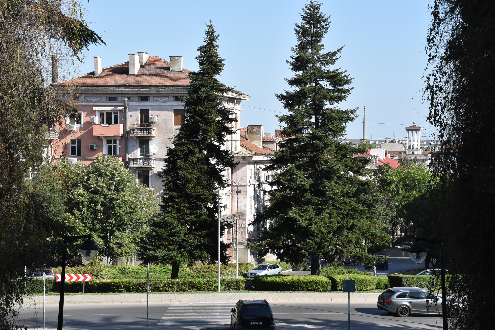
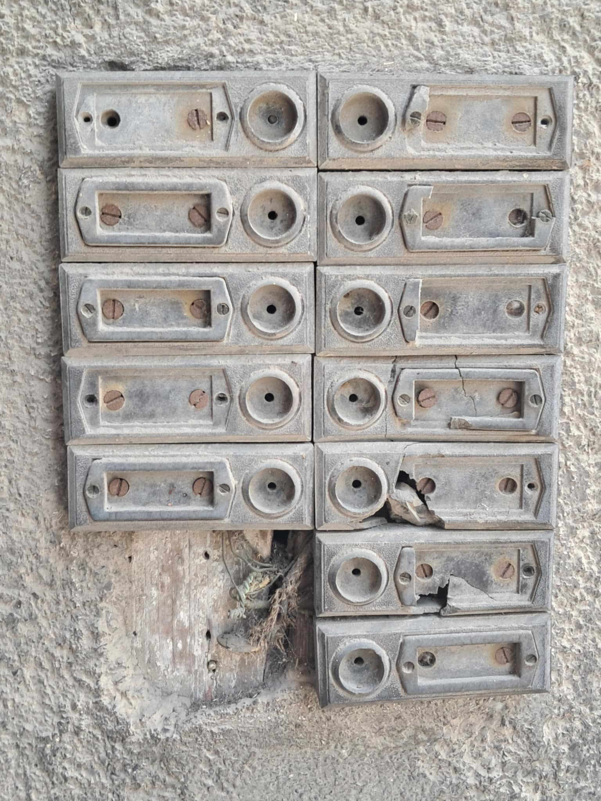
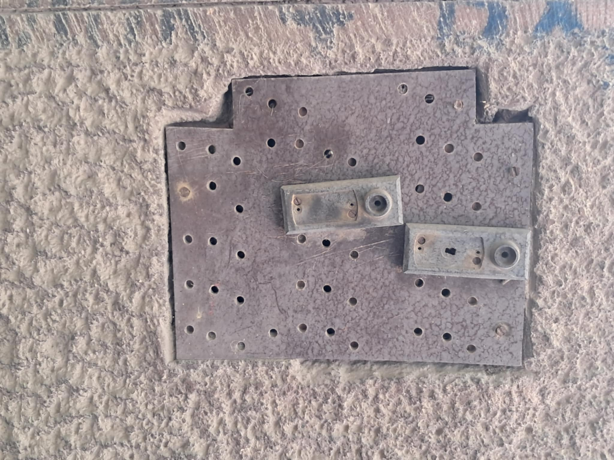
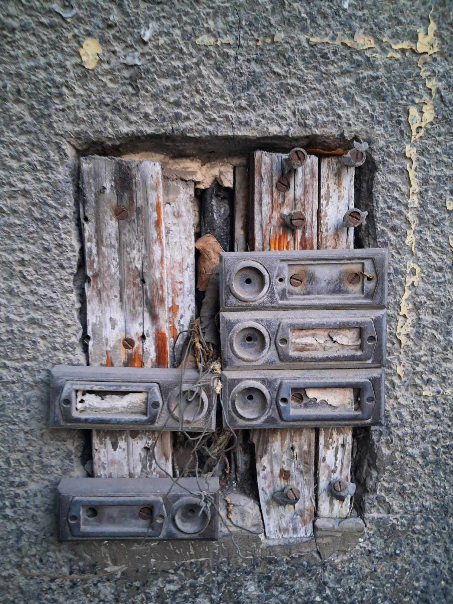
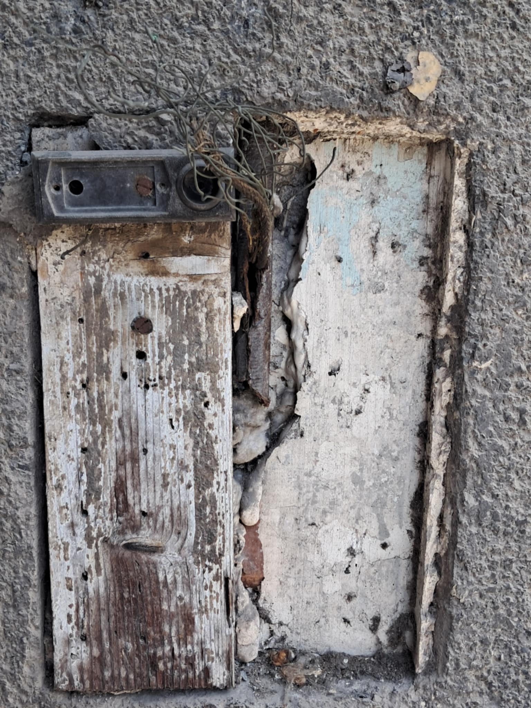
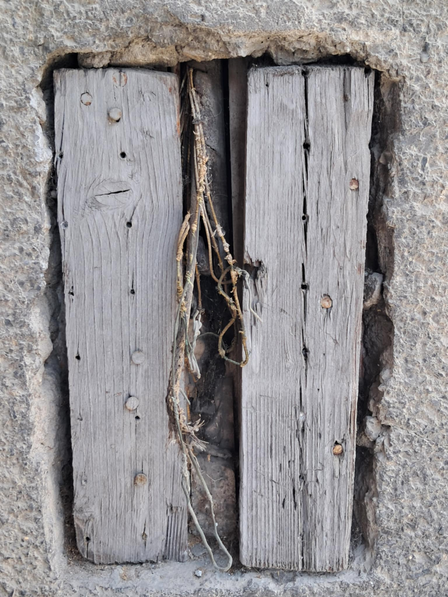
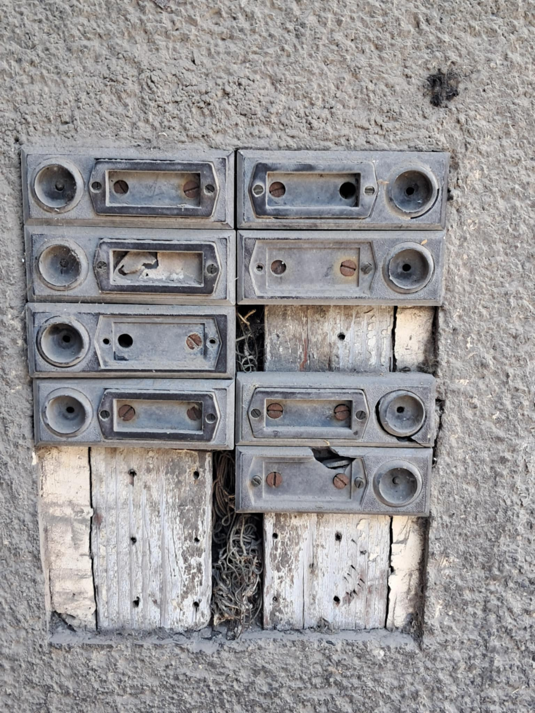

Интерактивна разходка из историята на Димитровград — първия социалистически град в България. Натисни звънеца. Чуй гласа на блоковете. An interactive walk through the history of Dimitrovgrad — Bulgaria’s first socialist city. Press a doorbell. Hear the voice of the blocks.
Димитровград е създаден през 1947 г. чрез обединяването на три села — Раковски, Марийно и Черноконево. Построен от десетки хиляди младежи-бригадири, той е замислен като първата „столица на социализма“ в България и като модел на нов начин на живот.
Старите домофонни табла по фасадите на блокчетата са част от тази архитектурна памет. Много от тях вече са повредени или липсват. Онези, които са останали, пазят спомена за ежедневието, за гласовете, които някога са звънели, и за града, който се е изграждал заедно с хората.
Този проект превръща звънците в интерактивен портал. Натисни копчето — и ще чуеш кратко изречение от историята на града.
Dimitrovgrad was founded in 1947 by merging three villages — Rakovski, Mariyno and Chernokonevo. Built by tens of thousands of youth brigadiers, it was conceived as Bulgaria’s first “capital of socialism” and a model for a new way of life.
The old intercom panels on the façades of the apartment blocks are part of this architectural memory. Many are already damaged or missing. Those that remain still hold the everyday past — the voices that once rang, and the city that was built together with its people.
This project turns the doorbells into an interactive portal. Press a button — and you will hear a short sentence from the city’s history.
„Ние изграждаме града, градът изгражда нас.“ "We build the city, the city builds us."

Типично табло от блокчетата — архитектурен детайл от епохата. A typical panel from the blocks — an architectural detail of the era.
Всяко запазено копче е портал. Кликни върху него — мъжки или женски глас ще разкаже по едно-две изречения от историята на Димитровград. Звънците са кликаеми.
Every remaining button is a portal. Click it — a male or female voice will tell one or two sentences from Dimitrovgrad’s history. The doorbells are clickable.
Плътна решетка от домофони — някои копчета липсват, други още пазят функцията си. A dense intercom grid — some buttons are missing, others still keep their purpose. Кликни Click

Метална плоча с десетки отвори — следи от отстранени звънци. A metal plate with dozens of holes — traces of removed doorbells. Кликни Click

Дървена основа и останали копчета — жива фрагментарна памет. Wooden base and remaining buttons — living fragmentary memory. Кликни Click

Единствен запазен звънец. Отсреща — празнота, запълнена с мазилка. A single remaining doorbell. Opposite — emptiness filled with plaster. Кликни Click

Мястото, където звънците са изчезнали напълно. The place where the doorbells have completely disappeared.

Едно от най-запазените табла — почти пълна решетка от гласове, които все още могат да бъдат чути. One of the best-preserved panels — an almost complete grid of voices that can still be heard. Кликни Click
„Ние изграждаме града, градът изгражда нас.“ "We build the city, the city builds us."Девиз на бригадирите · Димитровград Brigadiers’ motto · Dimitrovgrad
Официалната историческа справка на Община Димитровград съдържа подробен разказ за основаването, бригадирското движение, архитектурата и индустриалното развитие на града.
The official historical background of Dimitrovgrad Municipality contains a detailed account of the founding, the brigadier movement, the architecture and the industrial development of the city.